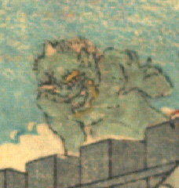

緑色の肌の鬼。禿げた頭頂部に角を生やし、黄色い眉毛とあごひげを生やしている。塀の上から下をうかがっている。
著作者：David Thompson／出典：親書誌：U426_nichibunken_0116：Momotaro／日付：2006／資源識別子：U426_nichibunken_0116_0003_0004
Copyright (c)2010- International Research Center for Japanese Studies, Kyoto, Japan. All rights reserved.